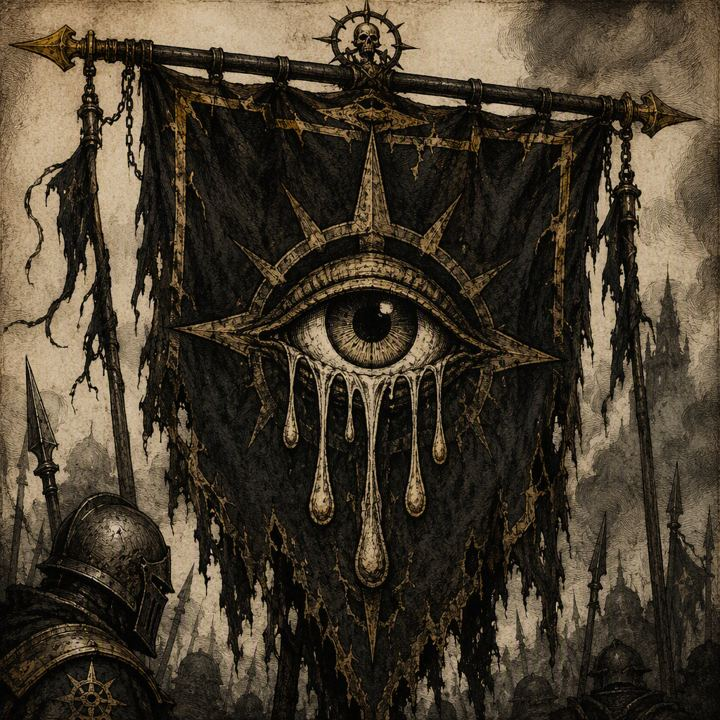

The Ashen Vanguard
knightly order · seat: Vharenford
Militant order sworn to contain the Ley-ruins left by the Sundering.
The Ashen Vanguard is a knightly order sworn to contain the Ley-ruins left by the Sundering. Its purpose is defined by militant discipline and the containment of those dangerous remnants.